05 · Direção de Arte & Geometria Sagrada
Glifos Arcanos, Bronze Forjado e Energia do Éter.
Cada elemento visual de Chronos // Weave foi forjado para expressar a solenidade e o mistério do cosmos: anéis astronômicos de bronze escovado, filigranas douradas luminescentes e sigilos vetoriais de geometria sagrada inspirados em astrometria quântica, alinhamentos planetários e alta fantasia cósmica.
Astrolábio em Tempo Real
Oito anéis pré-cessionais com inscrições estelares, engrenagens cinemáticas sincronizadas, nebulosa em shader e partículas orbitais. O maquinário tridimensional acompanha suavemente a navegação do jogador.
12 Molduras de Nós & Glifos
Três patamares (menor, notável e keystone ápice) em quatro estados canônicos. Glifos celestes desenhados sob geometria sagrada, com coloração dinâmica por shader para todas as constelações.
Lente Óptica Interativa
Uma camada de desfoque atmosférico dinâmico com lente ethereal rastreada pelo cursor do mouse suaviza as engrenagens ao fundo, destacando habilidades e conexões com nitidez absoluta.
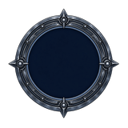
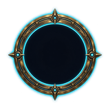

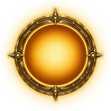
Notável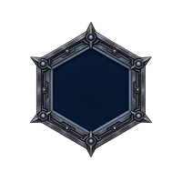

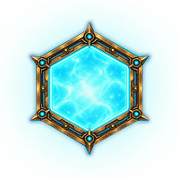
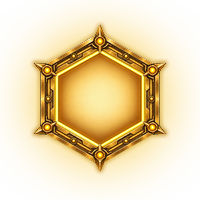
Keystone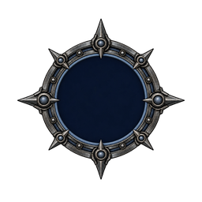

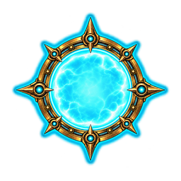
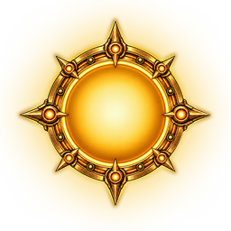
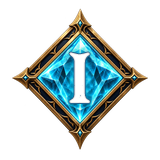
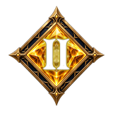
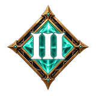
